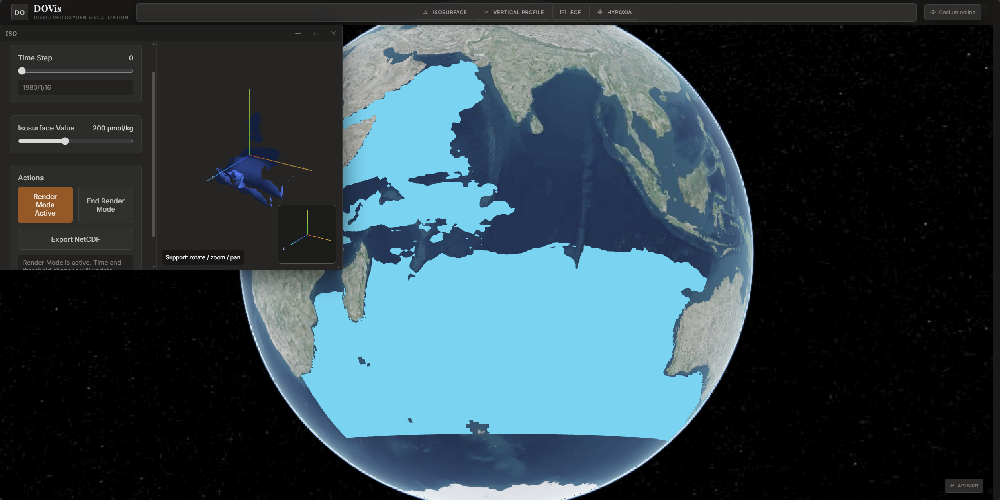
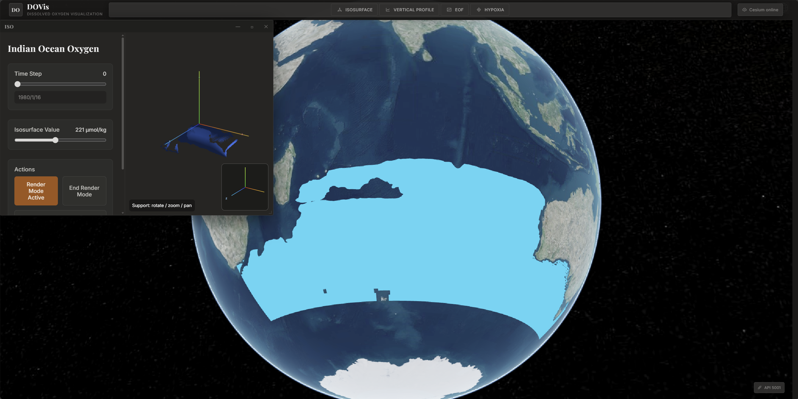

- 前端通过 GLSL Ray Marching 逐像素体渲染，512 步迭代实时预览等值面形态
- 后端提取体数据，Marching Cubes 生成三角网格，转换为 ECEF 地心坐标
- 网格导出为 GLB 并封装 B3DM Tileset，坐标变换确保 Cesium 球面精确定位
- 支持将等值面对应的深度场导出为 NetCDF 供后续分析
GLSL Ray Marching 512步Data3DTexturePyVista + pyproj ECEFGLB → B3DM TilesetMD5 缓存命中NetCDF 导出

